Tea Factory Gen - Reintroducing Tea
Great products were being overlooked.
Improve visibility and approachability without changing the product.
Use environmental cues to increase awareness and store entry.
Directions explored
Concept directions (A–E) evaluated before a final recommendation.
Evaluation criteria
Recognisability, curiosity, and adaptability, applied to every direction.
Not just rendered
The recommended direction was constructed — photographed on-site, facade and interior.
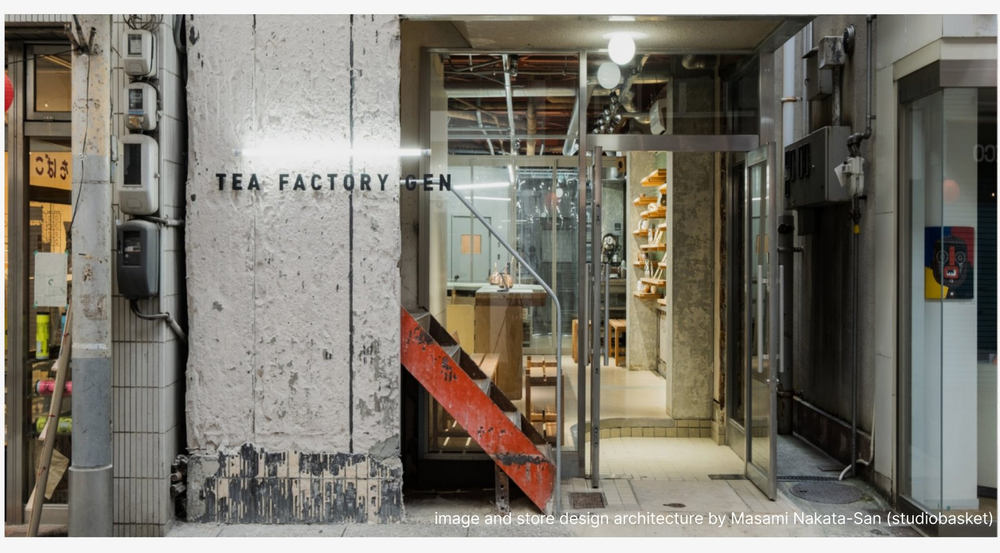
Tea is deeply embedded in Japanese culture, yet increasingly absent from everyday behavior. For many consumers, tea has become associated with expertise, tradition, and ritual rather than curiosity and discovery.
As Tea Factory Gen prepared to expand into a new retail environment, the challenge wasn't simply to identify the store as a place that sells tea. It was to create a storefront experience capable of attracting people who weren't already tea enthusiasts.
The resulting visual language explores how typography, environmental graphics, symbolic forms, and storefront interventions could transform the facade from a static identifier into a tool for engagement — communicating tea as an experience worth exploring, not just a product.
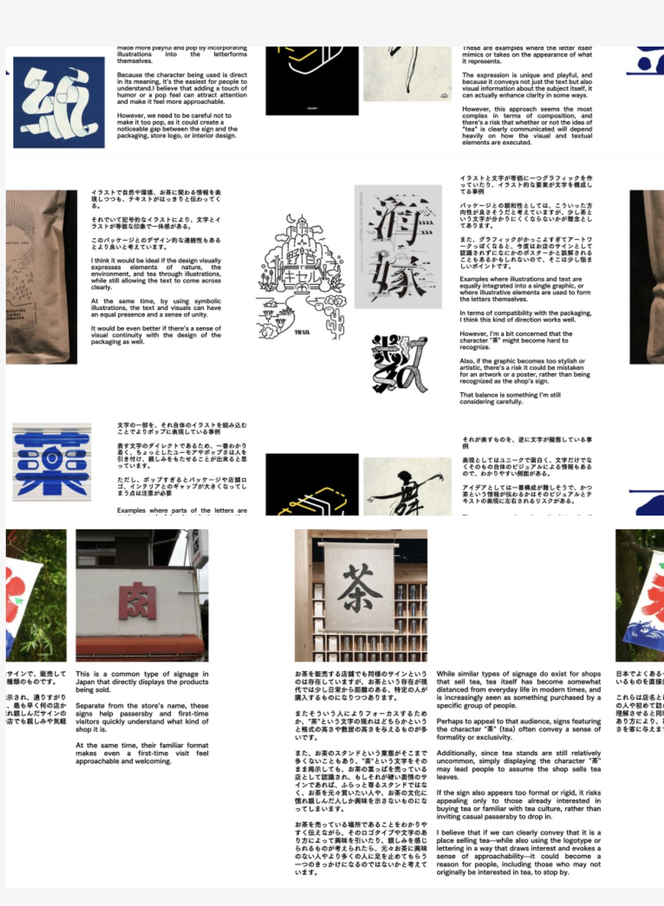
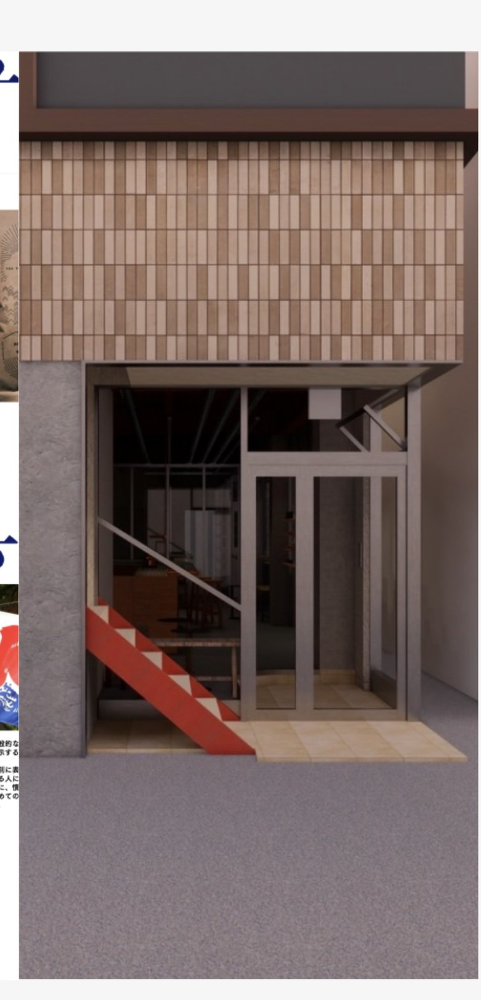
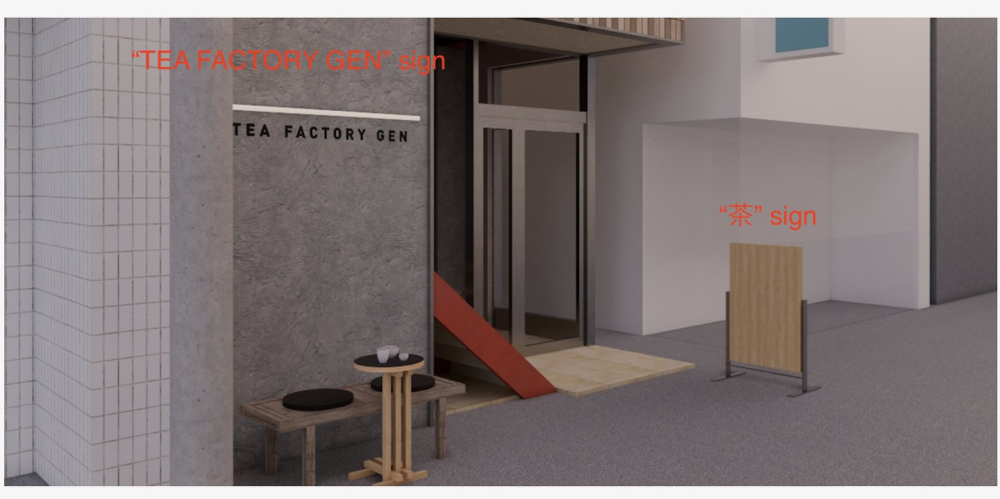
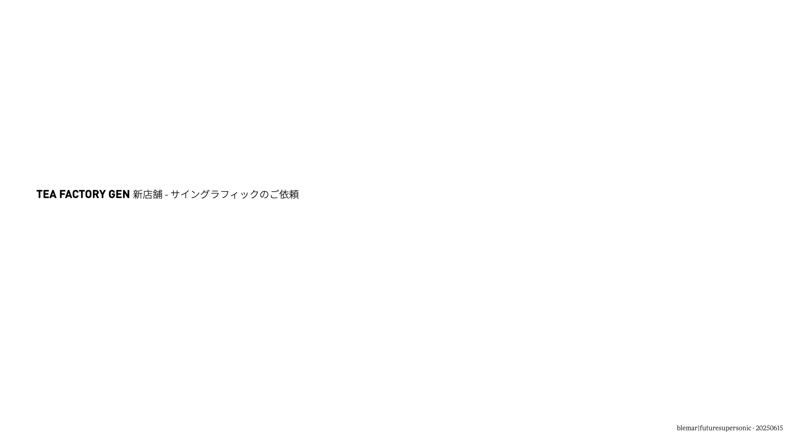
I began by identifying visual signals capable of attracting attention beyond existing tea consumers. Rather than starting with products, packaging, or traditional tea imagery, I investigated the cultural artifacts, symbols, behaviours, and visual languages surrounding tea.
Through studies of typography, vernacular signage, Japanese graphic culture, symbolic forms, and environmental interventions, I explored how familiarity and curiosity could coexist within the storefront — visual devices that communicate tea indirectly, encouraging people to engage with the space before understanding exactly what it offered.
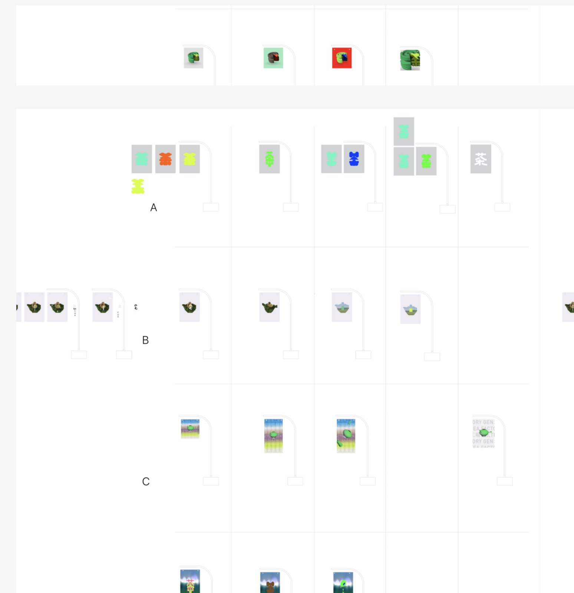
Abstract Familiarity
Drawing loosely from the structure and proportions of the character 茶, this direction transforms the familiar symbol into graphic objects that suggest tea without depicting it directly — recognition through association rather than explanation.
Layered Symbol
Uses the kyusu, the traditional Japanese teapot, as a behavioral symbol rather than a product illustration — focused on the act of tea rather than tea itself, contemporary yet culturally grounded.
Typography as Experience
Rustic textures and atmospheric gradients reference tea's natural origins, while deconstructed 3D teapot forms create moments of visual ambiguity that invite closer inspection.
Brand Signal
Reinterprets Tea Factory Gen's existing visual identity, reduced to its most recognizable forms and amplified through scale, color, and contrast — familiar and forward-looking at once.
Symbol As Object
Transforms the character 茶 into a three-dimensional object, shifting it from language into artifact — bold colour and playful distortion inviting engagement before full understanding.
I evaluated each direction against three criteria: recognisability, curiosity, and adaptability. Concepts needed to signal a connection to tea without literal product imagery, attract attention within a dense urban streetscape, and function across signage, environmental graphics, and future brand applications — narrowing a broad set of explorations into a smaller set of viable directions for client review.
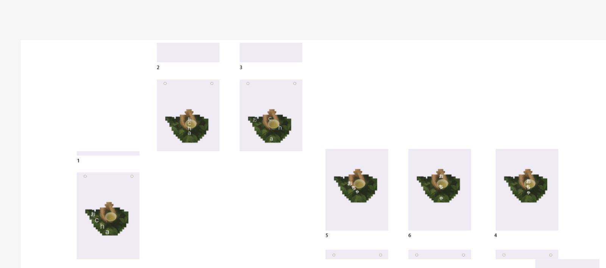
While several directions successfully communicated tea, I ultimately advised moving toward a solution balancing cultural recognition with contemporary accessibility.
The strongest opportunities emerged when familiar symbols were simplified and amplified rather than fully abstracted. Directions rooted in the character 茶 created immediate recognition while staying visually distinct from traditional tea retail environments.
My recommendation treated the storefront as a cultural invitation rather than a product advertisement — bold symbolic forms, restrained typography, and highly visible environmental graphics that could attract both tea enthusiasts and casual visitors without requiring prior knowledge.
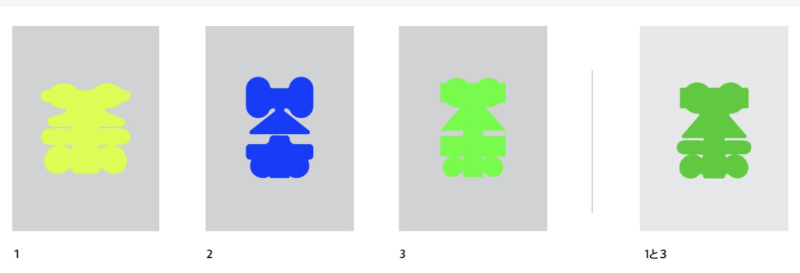
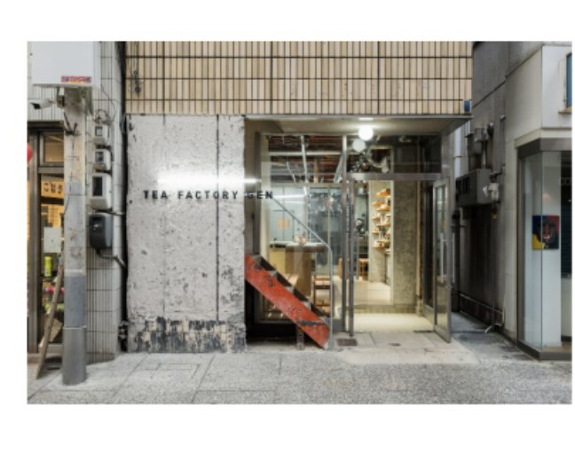
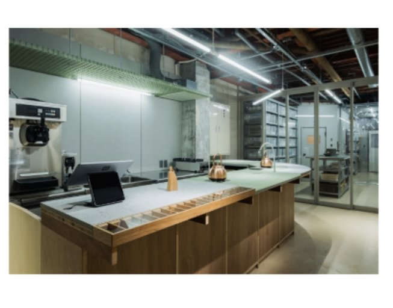
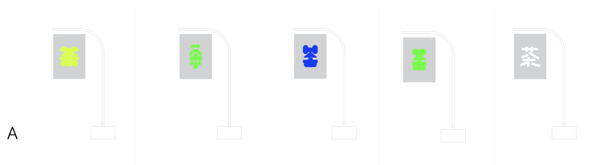
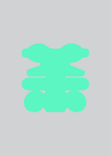
I tested the selected direction further through colour, scale, and environmental applications to see how the symbol performed across different touchpoints — visibility from a distance, recognition at street level, and adaptability across temporary and permanent signage.
By reducing the visual language to a small number of memorable elements, the storefront gained a stronger presence within the surrounding streetscape while staying flexible enough to evolve. The result: a single cultural symbol operating simultaneously as signage, identity, and environmental graphic.
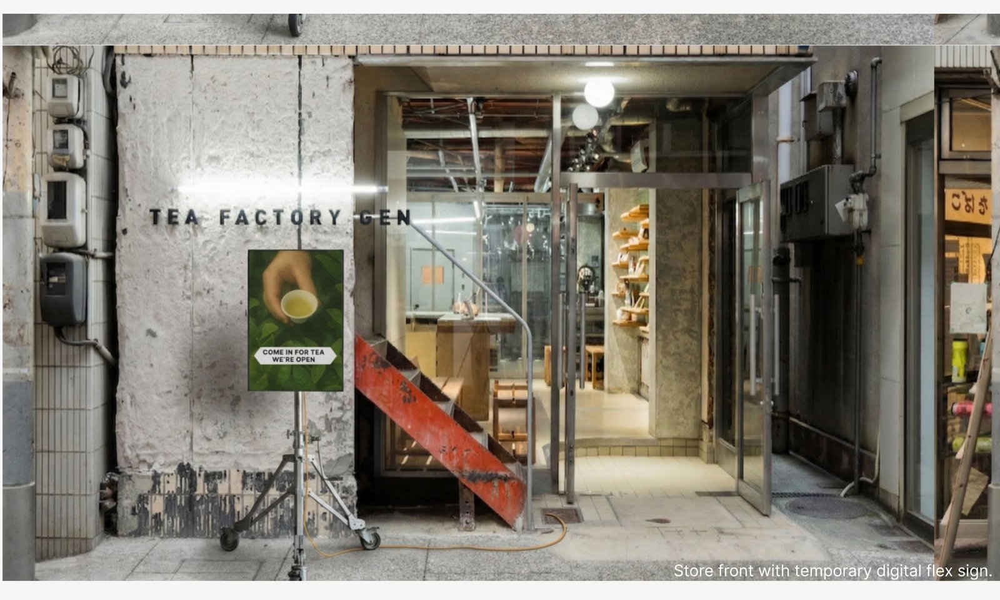
Tea Factory Gen was never intended to compete through information alone. The opportunity was to create a storefront capable of transforming curiosity into participation.
By exploring abstraction, symbolism, typography, and environmental graphics, I reframed tea not as a specialist product but as a cultural experience worth discovering — strategic visual intervention that lets a traditional product stay relevant in a contemporary retail environment without losing the authenticity that gives it value.